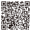

Encha o cesto de tokens.
Nada de cafezinho: aqui o benefício é de quem vive de IA. A Nuzi é gratuita e continua assim. Se ela te poupou tempo, seu apoio vai para o cesto de tokens de IA que usamos para criar coisas incríveis: primeiro a própria Nuzi, depois os próximos projetos.
Por que um cesto? Muito antes da escrita, o Oriente Médio contava cereais e animais com fichas de argila em forma de cone, esfera e disco: os primeiros tokens. Em Nuzi acharam um envelope de argila que lista 48 ovelhas e cabras de um pastor e guardava 48 contadores dentro. A Nuzi guarda os tokens dela num cesto, igual às tábuas.
Pix

Aponte a câmera do app do seu banco para o QR, use o Pix copia e cola ou copie a chave aleatória:
3b3db4d4-4b7e-4364-8163-0eb46efd5804
00020126580014br.gov.bcb.pix01363b3db4d4-4b7e-4364-8163-0eb46efd58045204000053039865802BR5916HENRIQUE MOREIRA6006PALMAS62070503***63041F10
O QR não tem valor fixo: você escolhe quanto mandar. O app do banco mostra o nome de quem recebe antes de confirmar.
As regras da casa
- Nenhuma função da Nuzi depende de apoio.
- A extensão pede só uma vez, depois de muitos itens organizados, e nunca mais.
- De tempos em tempos, contamos o que os tokens já criaram.